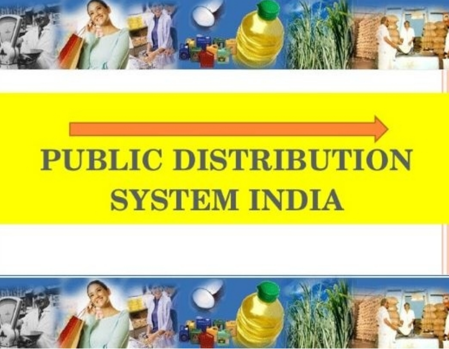

The Public Distribution System (PDS) is an Indian food security system that was established by the Government of India under the Ministry of Consumer Affairs, Food and Public Distribution to distribute food and non-food items to India's poor at subsidised rates. Major commodities distributed include staple food grains, such as wheat, rice, sugar and essential fuels like kerosene, through a network of fair price shops (also known as ration shops) established in several states across the country. Food Corporation of India, a government-owned corporation, procures and maintains the PDS. Leakages and corruption: There have been widespread reports of corruption and leakages in the PDS, with middlemen and corrupt officials diverting subsidised goods for sale in the open market or selling them at higher prices to beneficiaries. TPDS suffers from large leakages of food grains during transportation to and from ration shops into the open market The food grains supplied by the ration shops are not enough to meet the consumption needs of the poor. Quality of the food grains is very low. There is corruption involved in the process of identifying the poor families, and therefore, the benefit of PDS does not reach the needy poor sections of the society.
